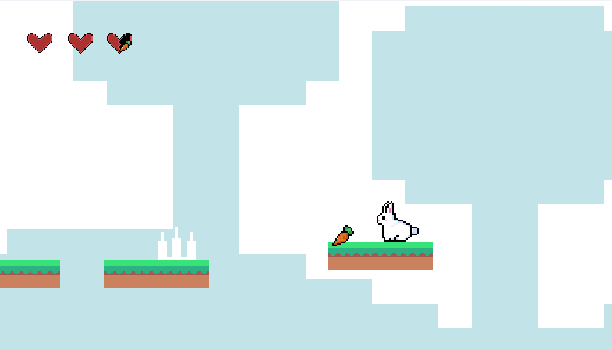

A 2D platformer with a bunny protagonist that I'm building on my own in GameMaker. The goal is a complete game, not just a movement demo: levels, hazards, collectibles, dialogue, and a consistent look.

I wanted to build a full 2D platformer from scratch to learn game development past the tutorial stage, including the parts that usually get skipped like art and UI.
Design and build a bunny-protagonist platformer with real levels: interactive environments, collectibles, hazards, dialogue, and transitions between levels.
I wrote the core systems in GameMaker, including movement, double jump, collisions, slopes, moving platforms, and damage and death states, and I made the tiles, animations, and UI so the game has one consistent style.
A playable platformer that keeps growing. It's taught me how the gameplay systems, art, and interface have to fit together for a game to feel finished.
- 🎮 Platformer systems: movement, double jump, slopes, and moving platforms
- 🎨 Custom tiles, animations, and UI for one consistent look
- 🐰 A bunny protagonist with dialogue, collectibles, hazards, and level transitions